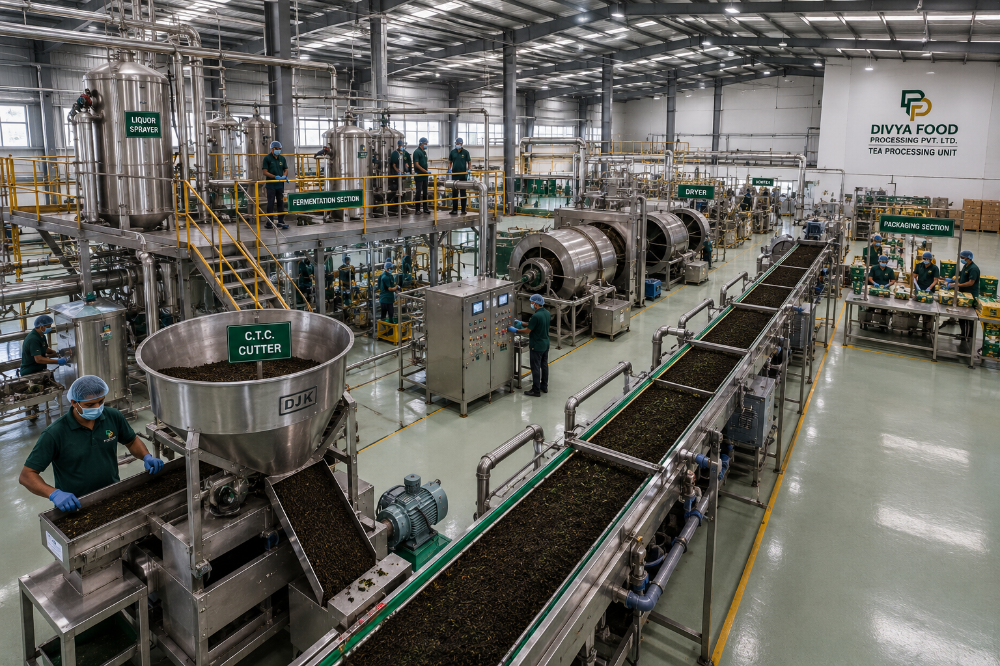
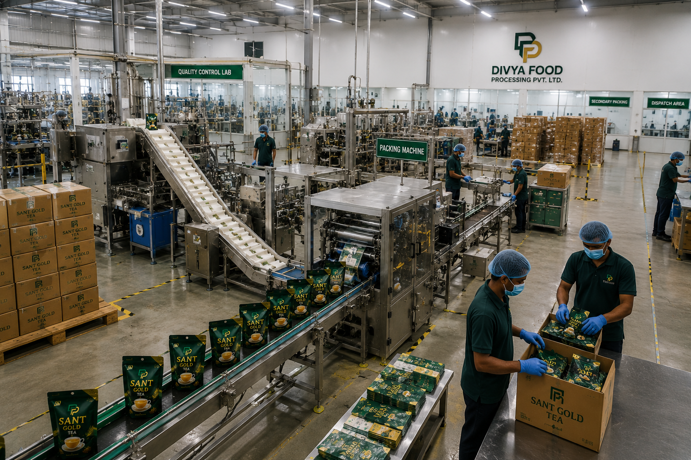
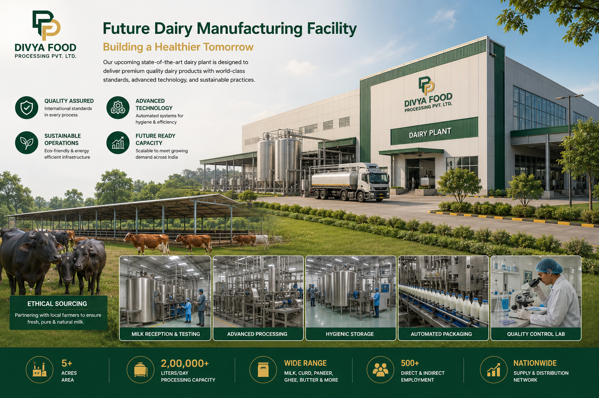

Business Ecosystem
Building a Diversified Food Processing Platform
Divya Food Processing Private Limited is evaluating multiple business verticals designed to support long-term growth, consumer brand development, manufacturing partnerships, and scalable market opportunities within India's food and FMCG sector.
Strategic Business Areas
The company is developing a business framework focused on food processing, consumer products, private label solutions, distribution opportunities, and future category expansion.

Tea Processing
Tea processing represents one of the company's primary strategic focus areas.
Divya Food Processing is evaluating sourcing, processing, quality management, and product development frameworks intended to support future tea-based consumer offerings.

Tea Blending
Product differentiation within the tea category is expected to be supported through customized blending strategies designed around consumer preferences and market positioning.
The company is exploring opportunities to develop distinct product profiles aligned with future brand objectives.

Packaging Solutions
Packaging plays an important role in product quality, brand identity, and market presentation.
The company is evaluating packaging formats, sourcing models, and strategic relationships intended to support future consumer and institutional product requirements.

Private Label Manufacturing
Private label opportunities represent a potential area for future business development.
The company intends to explore opportunities supporting retailers, distributors, institutions, and commercial partners seeking customized branded product solutions.

FMCG Distribution
Efficient distribution networks are critical to long-term FMCG growth.
The company is assessing market-entry strategies, distribution partnerships, and commercial frameworks intended to support future product availability and market expansion.

Future Dairy Division
Dairy and value-added food products represent a potential long-term growth opportunity under evaluation.
Future participation in dairy categories would depend upon market conditions, strategic partnerships, regulatory requirements, operational capabilities, and business priorities.
Integrated Growth Approach
Rather than focusing on a single product category, the company seeks to evaluate opportunities across multiple complementary business areas that may support future brand development and long-term enterprise growth.
This approach is intended to provide strategic flexibility while enabling disciplined expansion across selected food and FMCG segments.
Illustrative Visual Content
Images and visual representations used on this page are provided for conceptual, branding, communication, and presentation purposes.
Such visuals should not be interpreted as representations of existing facilities, production systems, infrastructure, partnerships, products, or future outcomes.
Forward-Looking Information
Certain statements on this page reflect strategic objectives, business initiatives, development priorities, and future aspirations.
Actual business activities, operational models, products, partnerships, and growth outcomes may differ based on commercial, regulatory, financial, and market considerations.